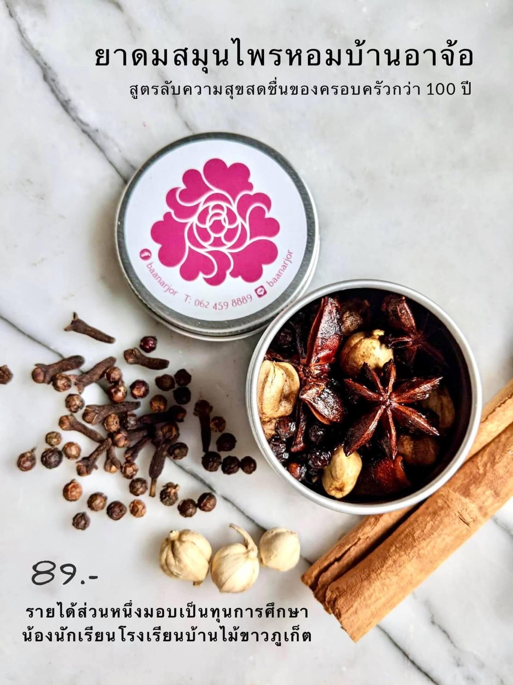

2564 · สังคม · เหตุการณ์
เปิดตัวยาดมสมุนไพรหอมบ้านอาจ้อ รายได้ช่วยพนักงานและนักเรียน

.. ในยาม covid แบบนี้ ช่วยๆกันน้า ช่วยคิด ช่วยทำ ช่วยขาย กำไรเล็กๆ น้อยๆ ก็จริง แต่ต่อลมหายใจให้อีกหลายชีวิตเลย ❤️ ..
💌 กุบละ 89 บาท 6 กุบส่งฟรี
#ยาดมสมุนไพรหอมบ้านอาจ้อ
#รายได้เพื่อน้องๆพนักงานและนักเรียนไม้ขาว
🌱 คัดสรรสมุนไพรหอมออแกนิค 100% จากชุมชน ทำความสะอาด ฆ่าเชื้อ อบแห้งสนิทด้วยกรรมวิธีมาตรฐาน ใช้นำ้มันเครื่องหอมให้เจ้านายสมัยโบราณ
🌸 ความละมุนไม่ใช่แค่หอมสดชื่น ยังมีสรรพคุณขับลม แก้วิงเวียนอีกด้วย เพราะผลิตตามตำรับเก่าแก่โบราณที่ส่งต่อกันจากรุ่นสู่รุ่น ตั้งแต่สมัยล้นเกล้ารัชกาลที่ 5
✨ นน เบา กุบสวยเหมาะพกพา
❤️ เป็นของขวัญของฝากที่ใครได้ใครรัก
#บ้านอาจ้อ 😊❤️📌